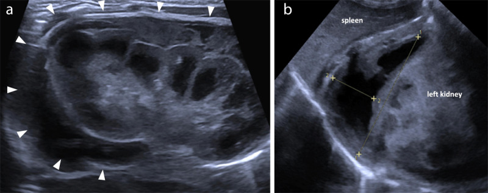
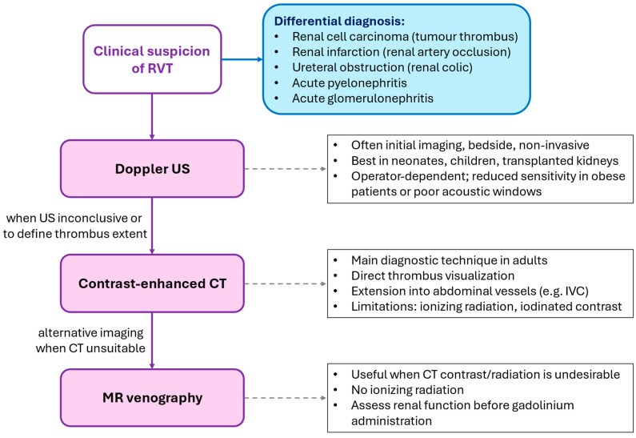
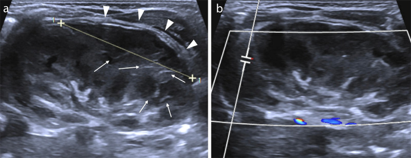
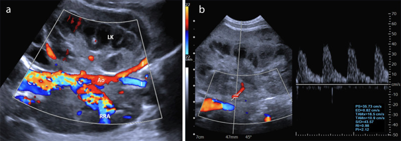
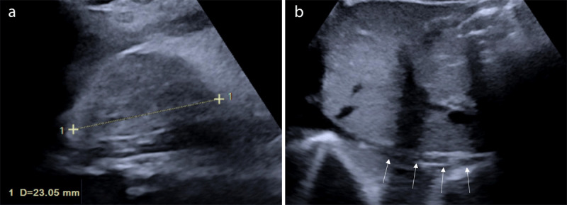

6111 — Huyết khối tĩnh mạch thận ở trẻ sơ sinh: thận to, mất dòng tĩnh mạch và tăng RI
Tags: pattern:huyet-khoi-tinh-mach pattern:than-to pattern:giam-tuoi-mau-than pattern:xuat-huyet-thuong-than vung:than vung:thuong-than protocol:sieu-am-Doppler protocol:CTV-bung incidentaloma:than-to-so-sinh
Mức chắc chắn (certainty): tổng hợp y văn (literature synthesis) — ghép ca nguyên văn huyết khối tĩnh mạch thận chu sinh có hình ảnh siêu âm–Doppler đầy đủ từ lúc cấp tới teo thận sau 1 năm (J Belg Soc Radiol 2023, PMC10540703), tổng quan tự sự về huyết khối tĩnh mạch thận (Diagnostics 2026, PMC13298574) và ca huyết khối thận–tĩnh mạch chủ dưới không do catheter ở sơ sinh (Open Access Maced J Med Sci 2018, PMC6182507).
Câu hỏi thực hành: sơ sinh đủ tháng, ngày thứ 4, nhập NICU vì khối vùng hông lưng trái 7 cm, da tái, huyết sắc tố 8,7 g/dL, tiểu cầu giảm. Siêu âm tại giường: thận trái to, vỏ tăng âm, có dịch quanh thận; Doppler không thấy dòng tĩnh mạch thận. Câu hỏi: đây là huyết khối tĩnh mạch thận hay xuất huyết thượng thận? Có phải chụp CT không? Có dùng kháng đông không, và thận có hồi phục? Bài chốt ba việc của người siêu âm sơ sinh: (1) nhận ra "thận to + mất dòng tĩnh mạch + RI tăng" là chữ ký của huyết khối tĩnh mạch thận (renal vein thrombosis, RVT); (2) phân biệt với xuất huyết thượng thận, ứ nước, huyết khối động mạch thận; (3) biết rằng thận thường KHÔNG hồi phục — teo thận và tăng huyết áp là đích theo dõi dài hạn. Nối 157 – Bệnh thận đa nang ADPKD/ARPKD, 151 – U thận đặc, 691 – Siêu âm và soi quanh catheter ở trẻ.
1. Tổng quan bệnh học – cơ chế hình ảnh: vì sao thận sơ sinh "sưng lên rồi teo đi"
- Sinh lý bệnh (Virchow ở trẻ sơ sinh): huyết khối bắt đầu trong các tĩnh mạch nhỏ nội thận (tĩnh mạch gian tiểu thùy, gian thùy) rồi lan ra tĩnh mạch thận chính và tĩnh mạch chủ dưới (inferior vena cava, IVC) — vì vậy nhiều tác giả cho rằng tên đúng hơn là "huyết khối tĩnh mạch thận" (renal venous thrombosis) chứ không chỉ "huyết khối tĩnh mạch thận" đơn thuần (Diagnostics 2026, PMC13298574). Ba yếu tố khởi phát đặc trưng ở sơ sinh: giảm thể tích/dòng chảy chậm, tổn thương nội mạc (catheter rốn, nhiễm khuẩn huyết) và tăng đông (yếu tố V Leiden, prothrombin G20210A, thiếu protein C/antithrombin).
- TẠI SAO thận to: tắc dòng ra tĩnh mạch → áp lực mao mạch cầu thận tăng → phù nề và xuất huyết nhu mô; bao thận căng, dễ vỡ bao và máu quanh thận. Đây là lý do thận có thể to gấp rưỡi bình thường: trong ca nguyên văn, thận trái 7 cm so với giá trị trung bình 4,5 ± 0,3 cm ở tuổi này (J Belg Soc Radiol 2023, PMC10540703).
- TẠI SAO "vỏ tăng âm + vệt tăng âm tủy thận" (echogenic medullary streaks): huyết khối lấp các tĩnh mạch gian thùy/gian tiểu thùy tạo các dải tăng âm hình nan hoa trên nền tủy giảm âm; sau 2–3 tuần các huyết khối nhỏ vôi hóa → đốm tăng âm kèm bóng lưng, rồi teo thận (Diagnostics 2026, PMC13298574). Đây là chuỗi "phù → vôi hóa → teo", không phải ba bệnh khác nhau.
- TẠI SAO RI tăng và phổ động mạch đổi: tắc tĩnh mạch làm áp lực mô kẽ tăng → sức cản dòng động mạch tăng; trên Doppler thấy RI tăng, dòng tâm trương giảm hoặc đảo. Ca minh họa có RI 0,88 và PI 2,12 ở động mạch thận trái (J Belg Soc Radiol 2023, PMC10540703, Figure 3b). Cần nhớ RI bình thường ở sơ sinh đã cao (tới ~0,8 ở trẻ nhỏ), nên phải so với thận đối diện chứ không dùng ngưỡng người lớn.
- Dịch tễ (ngưỡng định lượng): 2,2/100.000 trẻ sinh sống (Đức, có triệu chứng) và 13/100.000 ở trẻ đẻ non; Canada ~2,6/100.000 (dao động 1,6–3,4) giai đoạn 1992–2016; RVT chiếm 12,5–15,5% các ca huyết khối thuyên tắc ở sơ sinh; thận trái gặp nhiều hơn thận phải ~2,8 lần (tĩnh mạch trái dài hơn, nhiều nhánh hơn, đi qua khe giữa động mạch chủ và động mạch mạc treo tràng trên) (Diagnostics 2026, PMC13298574).

Siêu âm sơ sinh ngày thứ 4: (a) thận trái to, vỏ tăng âm, dải dịch/máu quanh thận dày (đầu mũi tên); (b) xuất huyết thượng thận trái kèm vùng hóa lỏng giảm âm, cạnh lách và cực trên thận trái. Đây là chữ ký của RVT chu sinh: thận to + máu quanh thận + xuất huyết thượng thận cùng bên. Nguồn: J Belg Soc Radiol 2023 (PMC10540703), CC BY 4.0, nguyên bản.2. Mẫu hình + chẩn đoán phân biệt theo vị trí và theo mức lan (gamut)
- Gamut theo mức lan của huyết khối: nội thận (nhánh nhỏ) → tĩnh mạch thận chính → IVC (tới hợp lưu tĩnh mạch gan) → nhĩ phải (nguy cơ thuyên tắc phổi, được báo cáo 12–18% ở người lớn có RVT). Lan sang tĩnh mạch thượng thận trái gây xuất huyết thượng thận (8–32% các ca); lan sang tĩnh mạch sinh dục trái gây ứ máu tiểu khung/giãn tĩnh mạch thừng tinh.
- Gamut theo bên: một bên (đa số, thận đối diện bù trừ) · hai bên (nguy cơ suy thận cấp, chỉ định can thiệp tích cực hơn) · một bên + IVC (nguy cơ huyết khối lan và tái phát).
- Gamut theo bối cảnh: tự phát ở sơ sinh khỏe (thường có yếu tố di truyền) · sau catheter rốn · sau ngạt/nhiễm khuẩn huyết/tụt huyết áp · mất nước, đa hồng cầu · mẹ đái tháo đường (17% trong một đoàn hệ) · hội chứng thận nhiễm mỡ (ở trẻ lớn hơn).
- Năm nhóm chính của "khối hông lưng" sơ sinh (nhóm tự biên để nhớ, không phải thang điểm): ứ nước thận · xuất huyết thượng thận · u nguyên bào thận/nephroblastomatosis (hiếm < 6 tháng) · viêm thận–bể thận mủ · huyết khối tĩnh mạch thận. Thêm huyết khối động mạch thận (thận teo, vỏ mất tín hiệu, không có thận to) và bệnh thận nang (nhiều nang, không có khối đặc).
3. Bảng so sánh phân biệt (ma trận đối chiếu)
| Thực thể (entity) | Hình ảnh điển hình | Chốt vào (rule-in) | Chốt loại (rule-out) | Gợi ý xác nhận |
|---|---|---|---|---|
| Huyết khối tĩnh mạch thận (RVT) | Thận to, vỏ tăng âm, mất phân biệt vỏ–tủy, vệt tăng âm tủy thận, huyết khối trong tĩnh mạch thận/IVC, không có dòng tĩnh mạch, RI tăng (0,88), máu quanh thận | Thận to + mất dòng tĩnh mạch + RI tăng so với bên đối diện | Thận nhỏ, không có huyết khối, dòng tĩnh mạch đầy đủ → không phải RVT | Doppler màu + phổ; CTV khi cần xác định mức lan |
| Xuất huyết thượng thận | Khối trên thận, hình tam giác/bầu dục, tăng âm rồi giảm âm theo ngày, không có dòng; thận bên dưới bình thường | Khối trên thận tách khỏi thận, thận bình thường | Khối nằm trong thận, thận to, mất dòng tĩnh mạch → RVT | Siêu âm lặp lại sau 1–2 tuần; không cần can thiệp |
| Ứ nước thận (hydronephrosis) | Bể thận giãn, các đài giãn, không có khối đặc; có thể teo nhu mô nếu mạn | Giãn bể thận + không có huyết khối | Không giãn bể thận, có huyết khối trong tĩnh mạch → RVT | Siêu âm bàng quang–niệu quản; MAG3 nếu cần |
| Huyết khối động mạch thận | Thận nhỏ/không to, vỏ mất tín hiệu, không có dòng động mạch, RI không đo được | Mất dòng động mạch + thận không to | Có dòng động mạch, thận to → RVT | Doppler màu; CTA/CTV nếu nghi |
| U nguyên bào thận (Wilms)/nephroblastomatosis | Khối đặc trong thận, bờ rõ, có thể huyết khối tĩnh mạch do u xâm lấn | Khối đặc có cấu trúc u + tuổi > 6 tháng | Thận to lan tỏa, không có khối đặc khu trú → RVT | CT/MRI; huyết khối do u KHÔNG đáp ứng kháng đông |
| Viêm thận–bể thận mủ (pyonephrosis) | Thận to, dịch đặc trong bể thận, thành dày, tăng tưới máu vỏ | Sốt + dịch lợn cợn trong bể thận + tăng tưới máu | Không có dịch bể thận, mất dòng tĩnh mạch → RVT | Siêu âm + cấy máu/nước tiểu |

*Thuật toán của bài tổng quan: nghi RVT → siêu âm Doppler (đầu tay, tại giường, không xâm lấn; tốt ở sơ sinh và thận ghép; phụ thuộc người làm, giảm độ nhạy khi béo/khó cửa sổ) → CT có cản quang khi siêu âm không kết luận hoặc cần xác định mức lan (nhìn trực tiếp huyết khối, lan vào IVC; hạn chế: bức xạ + i-ốt) → MRV khi không dùng được CT. Hộp chẩn đoán phân biệt của hình liệt kê u thận (huyết khối do u), nhồi máu thận (tắc động mạch), tắc niệu quản, viêm thận–bể thận cấp, viêm cầu thận cấp. Nguồn: Diagnostics 2026 (PMC13298574), CC BY 4.0, nguyên bản.*4. Protocol chụp + ngưỡng xử trí
- Siêu âm là đầu tay, không cần chuẩn bị, không cản quang: bắt buộc 3 chuỗi — (1) B-mode: kích thước thận (so với bên đối diện và bảng theo tuổi/cân nặng), độ dày vỏ, phân biệt vỏ–tủy, vệt tủy, dịch quanh thận; (2) Doppler màu: dòng trong tĩnh mạch thận và IVC, dòng trong nhu mô; (3) Doppler phổ: RI và PI của động mạch thận, so hai bên. Độ nhạy–độ đặc hiệu của Doppler so với chụp tĩnh mạch cũ là 85–100% / 56–75% — đủ để khởi đầu, không đủ để loại trừ khi cửa sổ kém (Diagnostics 2026, PMC13298574).
- CT tĩnh mạch (CTV) khi: cần xác định mức lan vào IVC/nhĩ phải, siêu âm không kết luận, hoặc cân nhắc can thiệp. MRV thay thế khi muốn tránh bức xạ/i-ốt, nhưng thường cần gây mê ở sơ sinh.
- Ngưỡng hình ảnh cần ghi vào phiếu: đường kính dài thận (mm) hai bên, tỷ lệ so với bên đối diện, RI hai bên, vị trí đầu huyết khối (tĩnh mạch thận/IVC/nhĩ), có xuất huyết thượng thận kèm không, có máu quanh thận không.
- Xử trí theo mức lan và chức năng thận:
flowchart TD
A[Sơ sinh có khối hông lưng, tiểu máu, giảm tiểu cầu] --> B[Siêu âm bụng + Doppler thận và IVC]
B --> C{Có huyết khối tĩnh mạch thận?}
C -->|Không| D[Xét ứ nước, xuất huyết thượng thận, u thận, viêm thận]
C -->|Có| E{Một bên hay hai bên và có lan IVC?}
E -->|Một bên, không lan, chức năng thận ổn| F[Kháng đông LMWH, theo dõi nội khoa]
E -->|Hai bên hoặc lan IVC hoặc suy thận| G[Cân nhắc can thiệp: hội chẩn huyết học và thận, xét tiêu sợi huyết]
F --> H[Siêu âm lại 1–2 tuần, 3 tháng, 1 năm; đo huyết áp mỗi lần khám]
G --> H
H --> I[Teo thận và tăng huyết áp là đích theo dõi dài hạn]
- Kháng đông (anticoagulation): là nền tảng điều trị RVT không do u. Thực hành trong các đoàn hệ sơ sinh: LMWH hoặc UFH 4–12 tuần (trung vị 8 tuần); không có khác biệt về tiêu huyết khối giữa nhóm < 6 tuần** và **> 6 tuần (tiêu một phần 71,4% vs 73,4%, tiêu hoàn toàn 28,6% vs 13,3%, p = 0,46). Hướng dẫn chung cho huyết khối thuyên tắc ở trẻ: 6 tuần với huyết khối có yếu tố khởi phát đã hết, 6–12 tháng với huyết khối không rõ nguyên nhân (Diagnostics 2026, PMC13298574).
- Theo dõi sau 2 tuần (mốc "thận đang đổi cấu trúc"): thận giảm kích thước nhưng mất phân biệt vỏ–tủy và xuất hiện vệt tăng âm tủy thận; Doppler có thể mất gần hoàn toàn dòng mạch trong thận dù huyết khối tĩnh mạch chính còn — đây là dấu hiệu nhồi máu nhu mô đang tiến triển, không phải "đang hồi phục".

Siêu âm lặp lại sau 2 tuần ở cùng bệnh nhi: (a) máu quanh thận mỏng đi (đầu mũi tên) nhưng mất phân biệt vỏ–tủy, xuất hiện vệt tăng âm tủy thận (mũi tên); (b) Doppler gần như mất hoàn toàn dòng mạch trong thận trái. Bài học: kích thước giảm không đồng nghĩa thận hồi phục — cấu trúc nhu mô mới là dấu hiệu tiên lượng. Nguồn: J Belg Soc Radiol 2023 (PMC10540703), CC BY 4.0, nguyên bản.- Tiêu sợi huyết (thrombolysis) chỉ khi hai bên + suy thận: trong 27 sơ sinh, 4 ca tiêu sợi huyết (đều hai bên) có biến chứng chảy máu 75% vs 0% so với LMWH/hỗ trợ (p = 0,05) và tiêu huyết khối tương đương 75% vs 75% (p = 1,00) — lợi ích chưa rõ, nguy cơ chảy máu rõ (Diagnostics 2026, PMC13298574). Với một bên, không suy thận, có khuyến nghị không điều trị đặc hiệu tới 29% ca trong loạt tư vấn 72 sơ sinh.
5. Biến thể bình thường và cạm bẫy
- Thận sơ sinh "bình thường" đã tăng âm và có múi: vỏ tăng âm hơn người lớn, phân biệt vỏ–tủy rõ; đừng gọi là RVT nếu không có thận to, không có huyết khối, dòng tĩnh mạch đầy đủ — luôn so hai bên và so với bảng kích thước theo tuổi.
- RI cao là sinh lý ở sơ sinh: ngưỡng người lớn (RI > 0,70) không dùng được; phải dùng so sánh bên–bên và bối cảnh lâm sàng (khối, tiểu máu, giảm tiểu cầu).
- "Không thấy dòng" có thể do máy, không phải do tắc: ở sơ sinh lưu lượng rất thấp — hạ PRF/scale, dùng power Doppler, đặt cửa sổ đúng trục tĩnh mạch, và lặp lại sau khi ủ ấm bệnh nhi trước khi kết luận tắc.
- Huyết khối có thể đồng âm (isoechoic) và không thấy trên B-mode — chỉ thấy khi không có dòng và tĩnh mạch giãn; đừng bỏ qua vì "không thấy cục".
- Xuất huyết thượng thận cùng bên che lấp thận: khối trên thận có thể là máu tụ, không phải u; nếu thận bên dưới bình thường thì không mặc định là RVT — nhưng ngược lại, RVT có thể gây xuất huyết thượng thận (8–32%), nên khi thấy máu thượng thận phải khảo sát tĩnh mạch thận.
- Bẫy "thỏa mãn tìm kiếm" với IVC: đã thấy huyết khối tĩnh mạch thận là dừng — nhưng lan lên IVC thay đổi tiên lượng và thời gian kháng đông; luôn chạy dọc IVC tới hợp lưu tĩnh mạch gan.
- Hai bên = suy thận cấp: đừng bỏ sót thận đối diện; và huyết khối do u (Wilms) không đáp ứng kháng đông — nếu thấy khối đặc trong thận kèm huyết khối, hướng chẩn đoán khác.
6. Tự lượng giá — Blind Quiz
Ca 1 — Sơ sinh ngày thứ 4, khối hông lưng trái 7 cm.
- Gợi ý lâm sàng: đủ tháng, da tái, Hb 8,7 g/dL, tiểu cầu giảm, chưa đặt catheter rốn.
- Câu hỏi: Mô tả hai bất thường chính. Chẩn đoán nào bao trùm cả hai? Cần khảo sát thêm mạch nào ngay trên cùng buổi siêu âm?
Bấm để hiện đáp án (findings + chẩn đoán)
- Dấu hiệu (findings): (a) thận trái to, vỏ tăng âm, dải dịch/máu quanh thận (đầu mũi tên); (b) khối xuất huyết thượng thận trái có vùng hóa lỏng giảm âm.
- Chẩn đoán (diagnosis): huyết khối tĩnh mạch thận trái chu sinh gây nhồi máu–xuất huyết nhu mô, vỡ bao (máu quanh thận) và lan sang tĩnh mạch thượng thận (xuất huyết thượng thận cùng bên, gặp 8–32%).
- Vì sao: tắc dòng ra → áp lực mao mạch cầu thận tăng → phù, xuất huyết, thận to; nhánh thượng thận trái đổ vào tĩnh mạch thận trái nên dễ bị tắc theo.
- Cần làm ngay: Doppler tĩnh mạch thận và IVC để xác định mức lan, Doppler phổ động mạch thận để đo RI.
- Nguồn ảnh: J Belg Soc Radiol 2023 (PMC10540703), CC BY 4.0, nguyên bản.
Ca 2 — Cùng bệnh nhi, Doppler động mạch thận trái.

- Gợi ý lâm sàng: đang theo dõi RVT trái đã xác định.
- Câu hỏi: Phổ động mạch thận cho thấy gì (đọc số)? Vì sao tắc tĩnh mạch lại làm RI tăng? Có cần chụp CT ngay không?
Bấm để hiện đáp án
- Dấu hiệu (findings): (a) Doppler màu: không có dòng trong tĩnh mạch thận trái và các nhánh nhỏ, còn dòng động mạch thận đối diện (RRA) và động mạch chủ (Ao) tăng rõ; (b) phổ động mạch thận trái: dòng tâm trương giảm, RI 0,88, PI 2,12.
- Chẩn đoán (diagnosis): RVT trái với tăng sức cản động mạch do tăng áp lực mô kẽ — không phải hẹp động mạch thận.
- Vì sao: tắc dòng ra → phù nhu mô → áp lực mô kẽ tăng → sức cản dòng vào tăng → RI tăng và dòng tâm trương giảm/đảo.
- Có cần CT ngay không: không bắt buộc nếu siêu âm đã rõ và không nghi lan IVC; CTV khi cần xác định mức lan hoặc cân nhắc can thiệp.
- Nguồn ảnh: J Belg Soc Radiol 2023 (PMC10540703), CC BY 4.0, nguyên bản.
Ca 3 — Cùng bệnh nhi sau 1 năm.

- Gợi ý lâm sàng: đã điều trị enoxaparin, tái khám định kỳ, huyết áp cần theo dõi.
- Câu hỏi: Thận trái bây giờ ra sao (đọc số đo)? Tĩnh mạch chủ dưới có gì? Vì sao vẫn phải theo dõi huyết áp nhiều năm?
Bấm để hiện đáp án
- Dấu hiệu (findings): (a) thận trái teo, đường kính dài 23,05 mm; (b) IVC hình chỉ (filiform) với các mũi tên chỉ đoạn hẹp–xơ sau huyết khối.
- Chẩn đoán (diagnosis): teo thận trái sau RVT + xơ hẹp tĩnh mạch chủ dưới — di chứng cố định, không hồi phục.
- Vì sao phải theo dõi huyết áp: teo thận sau RVT đi kèm tăng huyết áp mạn: 22,0% (13/59) tăng huyết áp nặng cần thuốc sau trung vị 4,0 năm; 32,5% (13/40) sau 3,7 năm; 38,8% (33/85) sau trung vị 11,1 năm, nguy cơ gấp 15,7 lần trẻ không có RVT (Diagnostics 2026, PMC13298574).
- Phản biện nguồn: đây là một ca nguyên văn; tỷ lệ teo thận trong các đoàn hệ dao động lớn (67% tới 81,8–90,9% số thận bị ảnh hưởng) — không dùng một ca để suy ra tiên lượng cá nhân.
- Nguồn ảnh: J Belg Soc Radiol 2023 (PMC10540703), CC BY 4.0, nguyên bản.
Bài liên quan chéo
- 151 – U thận đặc: phân biệt u nguyên phát và di căn
- 157 – Bệnh thận đa nang ADPKD/ARPKD
- 691 – Siêu âm và soi quanh catheter ở trẻ
- 635 – Dị tật tiết niệu nhi: SFU, VUR, PUV
- 600 – Tổng quan Nhi khoa
Không dùng để chẩn đoán độc lập khi chưa có người hướng dẫn.